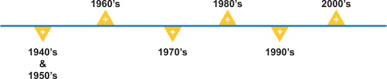

Hedge funds have become increasingly popular over the past 10 years, experiencing tremendous growth in both the number of investors participating in hedge funds and the number of hedge funds offered in the marketplace. In fact, it is estimated that nearly $1 Trillion are currently invested in hedge funds. However, while their popularity has boomed in recent years, hedge funds have been in existence for a long period of time. Click each date to learn more.
